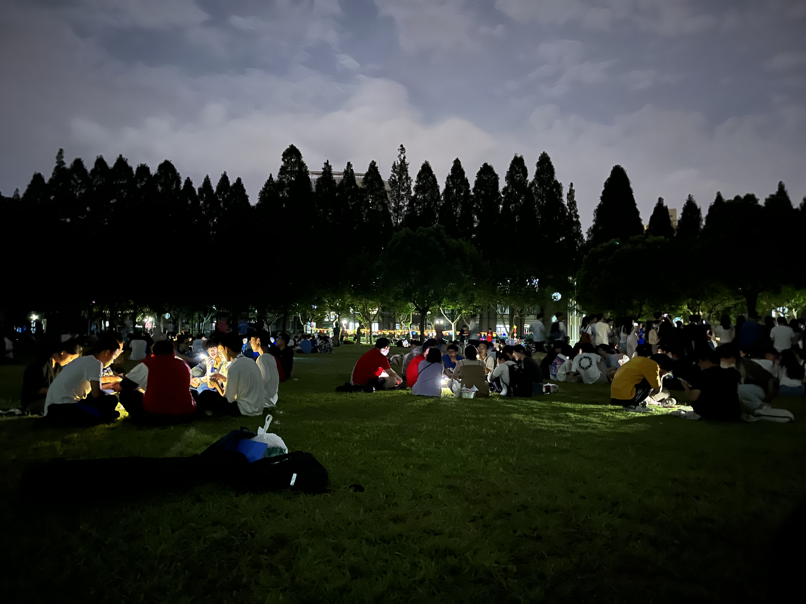
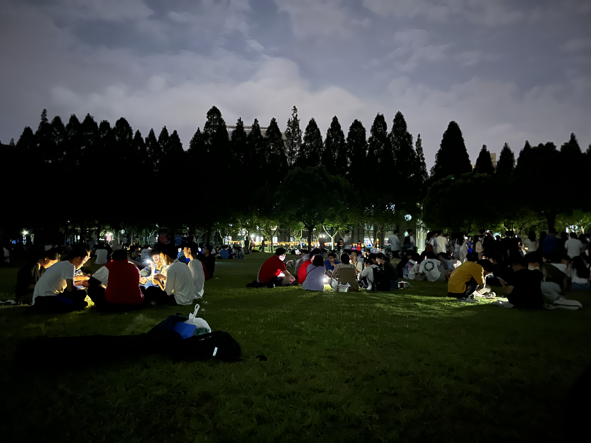
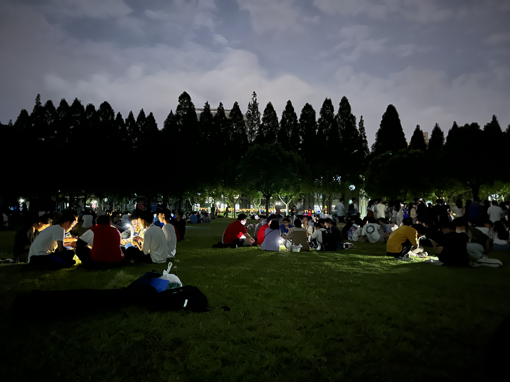
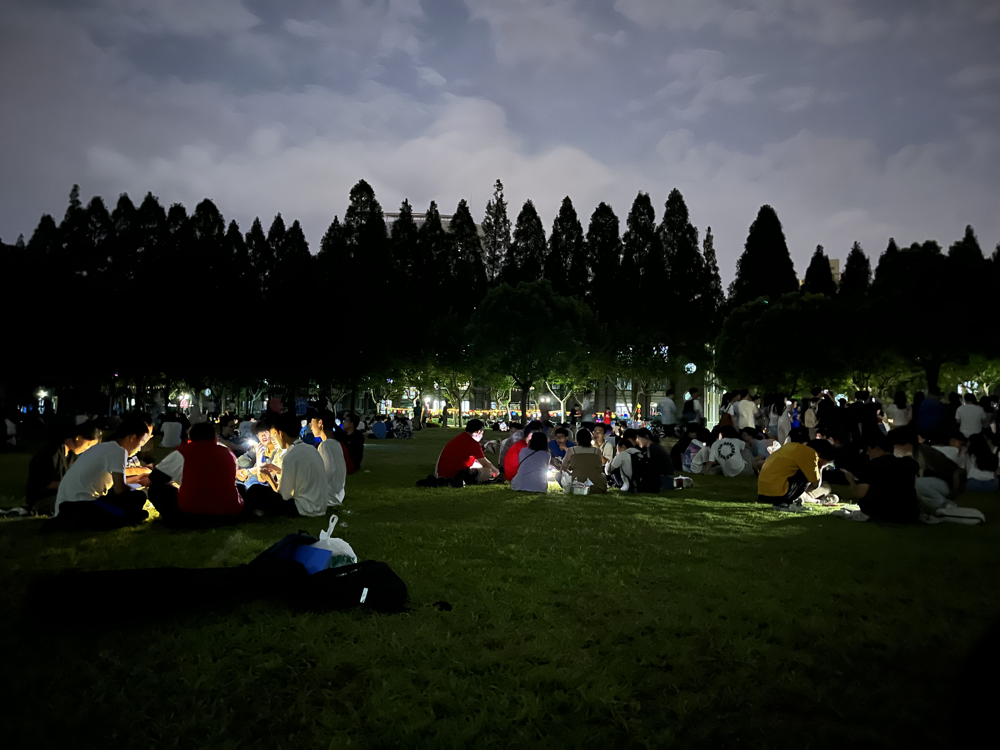

天数天之前，他在经济伦理课上添加了这个小可爱→她从一开始就展现出了对美食的热爱
仅仅1天之后，沈导和他的学生们前往The Press，他们再次相遇了，也许这就是上天的安排吧
这个答案，他们已经书写了天
正如她的母校操场标语”将论文写在祖国大地上“为了寻找答案后的附加分，他们走过了有文化气息的绍兴、豪车遍地的宁ba、和上海很像的武汉、ganla很便宜的青岛、被晒黑了的三亚……人生无止境，而他们的故事，远不止此
 


